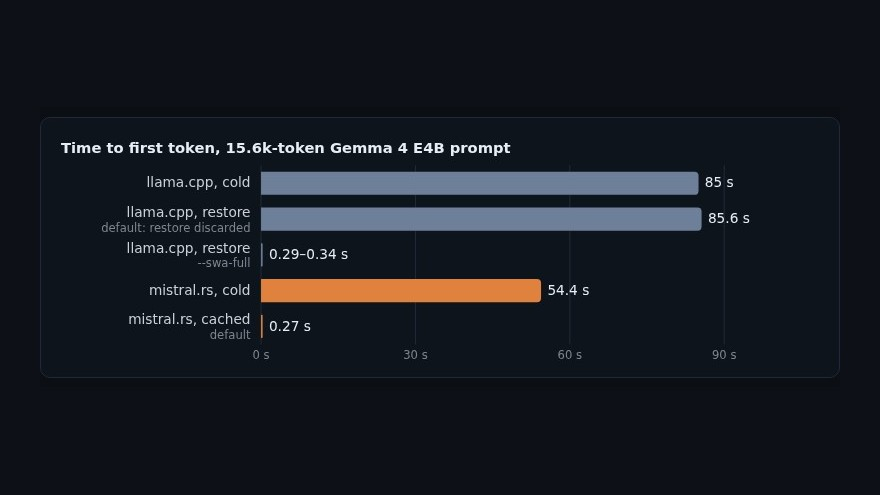
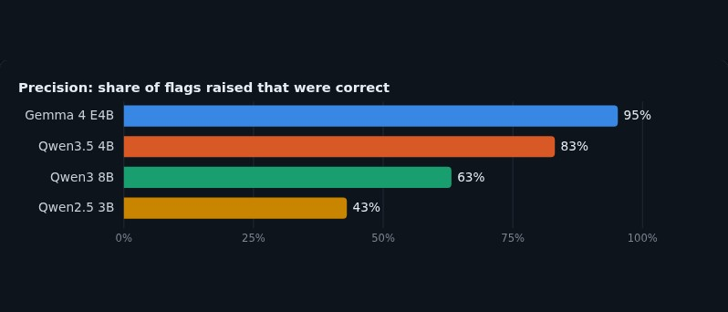
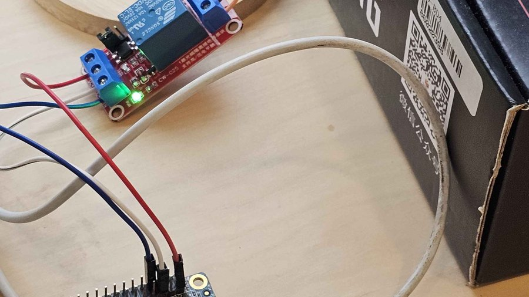
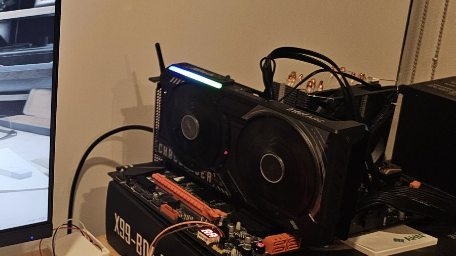
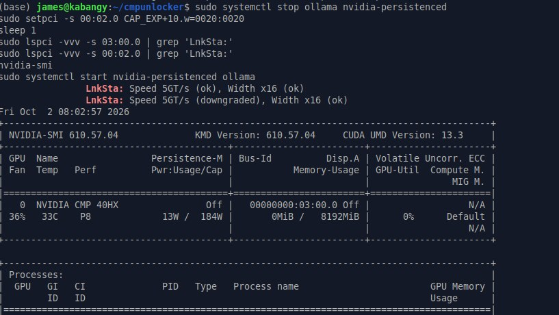
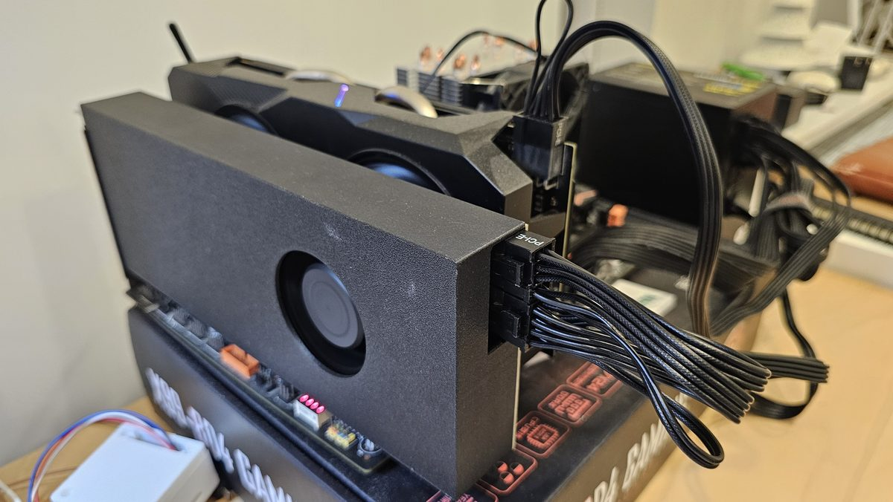
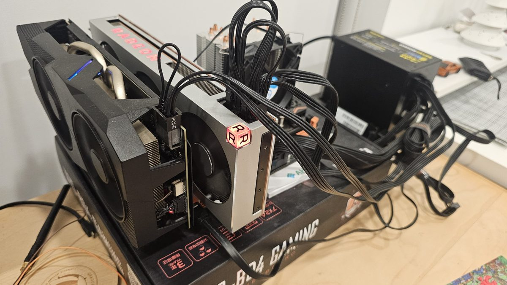
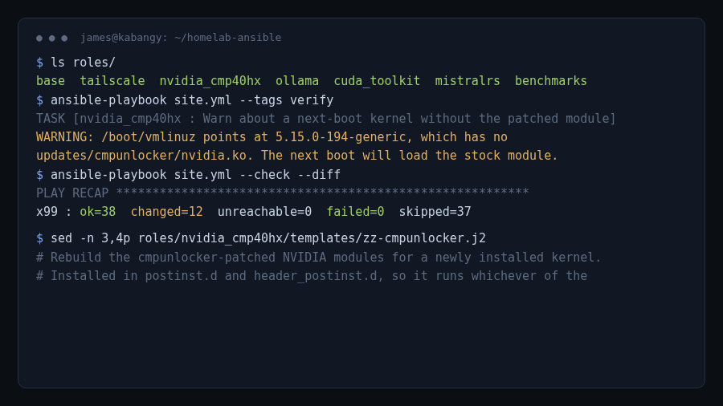

Hardware project · August 2026 – ongoing
The X99 Build
One secondhand Huananzhi X99-BD4 board turned into an inference server that I keep extending: soldering its PCIe lanes, flashing its BIOS, waking it over the network, unlocking the mining GPUs, and pooling two GPUs from two vendors to serve one model.
It now runs Proxmox VE 9.2 with one LXC container per GPU: the unlocked CMP 40HX on my patched NVIDIA driver and an AMD Radeon VII on ROCm, with the host keeping both drivers. llama.cpp RPC pools the two cards across containers to serve Qwen3 32B. The models load from the Intel NVMe, mounted read-only, and Ubuntu stays on it as a fallback.
Current setup
Build log
Each chapter is a write-up of one change to the machine, in the order it happened.

200 Bucks Inference Machine
Where the build started: mining GPUs turned into a local inference server, with a PCIe x16 capacitor mod, patched CUDA kernels, and KV cache reuse on Gemma 4 cutting time to first token from 54 s to 0.27 s.

kvsnap: mistral.rs vs llama.cpp
Gemma 4 time to first token from 54 s to 0.27 s on this box, with a 17-line KV cache snapshot patch to mistral.rs.

Four Small LLMs on One 8GB Card
Gemma 4 E4B and three Qwen models on schema-constrained extraction over 78 hand-labeled documents, run on the CMP. Gemma led at 95% precision.

Wake on LAN Retrofit
A BIOS with no Wake on LAN, on Wi-Fi that isolates clients: a Python listener on an Orange Pi Zero validates magic packets over Tailscale and presses the X99's power button with a relay.

Resizable BAR on X99
Inserting ReBarDxe into the X99-BD4 BIOS, and catching a 16-byte corruption UEFITool left in a volume I never touched.

CMP 40HX: PCIe 2.0, ReBAR and FP16 Unlock
Patched NVIDIA kernel modules lift the mining card's limits. FP16 went from 0.98 to 54 TFLOPS, generation doubled, and a manual root port retrain got Gen2 working on X99.

V100 + CMP 40HX: Two Drivers, One Box
A Tesla V100 passed through to a KVM guest with vfio-pci so it can run the closed 580 driver, while the host keeps the patched 610 for the CMP. llama.cpp RPC pools both GPUs to serve Qwen3 32B at 24 tok/s.

Proxmox: One Container per GPU
I moved the box from Ubuntu to Proxmox VE 9.2. The Radeon VII and the unlocked CMP 40HX each run in their own LXC container, and the CMP keeps its Gen2 x16 link and 8 GiB BAR1. Pooled Qwen3 32B over RPC between containers matches bare metal at 20 tok/s.

X99 Recreation (Ansible)
The whole box as code: 7 Ansible roles distilled from 1,661 lines of shell history. It pins the NVIDIA open driver, rebuilds the patched CMP 40HX modules for every new kernel, and retrains the PCIe link to Gen2 at boot. Its verify step caught a kernel update that would have booted the stock driver.
Documentation
Hardware
| Part | What’s in it |
|---|---|
| Board | Huananzhi X99-BD4, AMI Aptio V 5.11 BIOS with ReBarDxe inserted |
| CPU | Intel Xeon E5-2678 v3 (Haswell-EP, 12 cores) |
| OS | Proxmox VE 9.2 on a SATA SSD, kernel 7.0.14-30-pve (pinned); models on the Intel 660p NVMe, mounted read-only, with Ubuntu 24.04 kept on it as a fallback |
| Network | Wi-Fi + Tailscale; powered on by an Orange Pi Zero relay |
GPU slots
| Slot | Card | Driver | Link | Notes |
|---|---|---|---|---|
| Root port 3 | CMP 40HX (TU106, 8 GB) | NVIDIA 610.57.04 open, patched by cmpunlocker | PCIe Gen2 x16, retrained at boot | FP16 unlocked, 8 GiB BAR1 |
| Root port 2 | Radeon VII (Vega 20, 16 GB HBM2) | amdgpu + ROCm 6.3.3 | PCIe 3.0 x16 | capped at 200 W (stock 250 W), 16 GiB BAR0 |
Previously, a Tesla V100 SXM2 took root port 2 in place of the Radeon VII, passed through with vfio-pci to a KVM guest on the closed 580 driver. That setup is in V100 + CMP 40HX: Two Drivers, One Box.
Rebuilding it
The Ubuntu install, now the fallback on the NVMe, is described in X99-Recreation, an Ansible playbook that rebuilds it from scratch. The Proxmox host is set up by one script that mirrors the playbook’s nvidia_cmp40hx role. The playbook’s roles:
base,tailscale: packages, hostname, user groups, Tailscale SSH.nvidia_cmp40hx: installs the 610.57.04 userspace, pins and holds the driver packages, builds the cmpunlocker modules, and installs the boot units below.amdgpu_power: the Radeon VII power cap.ollama,cuda_toolkit, plus optionalmistralrsandbenchmarksroles.
What happens at boot
- The patched NVIDIA modules load and try their own Gen2 retrain, which fails on this board’s root port.
cmp40hx-gen2-retrainreprobes the driver so the card advertises Gen2, then retrains the link from the root port: 2.5 → 5 GT/s. It checks the PCI ID first, so it won’t touch a different card if the slots change.cap-cmp40hxlocks the CMP’s idle clock to 300 MHz (cmp40hx-uncapreleases it for inference).amdgpu-power-capfinds the Radeon VII by PCI ID and sets its cap to 200 W.- Only then do the containers start, so container 102 gets a CMP that is already unlocked, at Gen2 x16, with its 8 GiB BAR1. A container can’t retrain the link or change clocks, so all of this stays on the host.
The unlock is volatile and the patched modules are built per kernel, so a kernel hook rebuilds cmpunlocker for every new kernel before it’s booted.